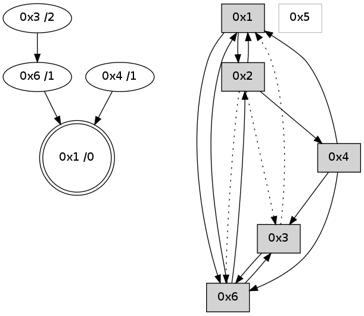

>> << IDX [start] -100 -25 -5 +0 +5 +25 +100 [645.303435087]
 Previous packets
----------------------------------------------------------------------
640.382351 beacon01(adaf) #0 coord=01,02,05,03,04,06 cycle=432.0ms assoc
-- color-indic=0 64 8a 5a
640.392312 beacon02(adaf) #0 coord=01,02,05,03,04,06 cycle=432.0ms assoc 64 db a5
640.402312 beacon05(adaf) #0 coord=01,02,05,03,04,06 cycle=432.0ms assoc 64 7d 8f
640.412312 beacon03(adaf) #0 coord=01,02,05,03,04,06 cycle=432.0ms assoc 64 e1 ab
640.422312 beacon04(adaf) #0 coord=01,02,05,03,04,06 cycle=432.0ms assoc 64 47 81
640.432313 beacon06(adaf) #0 coord=01,02,05,03,04,06 cycle=432.0ms assoc 64 33 9d
640.443997 [Hello(6): seq=356 sym=3,1,2 sysInfo= stat=3:0,0,0,0/1:15,0,0,0/2:1,0,0,0]
----------------------------------------------------------------------
640.874458 beacon01(adaf) #0 coord=01,02,05,03,04,06 cycle=432.0ms assoc
-- color-indic=0 64 c6 ea
640.884418 beacon02(adaf) #0 coord=01,02,05,03,04,06 cycle=432.0ms assoc 64 97 15
640.894419 beacon05(adaf) #0 coord=01,02,05,03,04,06 cycle=432.0ms assoc 64 31 3f
640.904380 beacon03(adaf) #0 coord=01,02,05,03,04,06 cycle=432.0ms assoc 64 ad 1b
640.914419 beacon04(adaf) #0 coord=01,02,05,03,04,06 cycle=432.0ms assoc 64 0b 31
640.924420 beacon06(adaf) #0 coord=01,02,05,03,04,06 cycle=432.0ms assoc 64 7f 2d
640.936107 [Hello(4): seq=442 sym=6,3,1 sysInfo= stat=6:14,0,0,0/3:0,0,0,0/1:12,0,0,0]
640.941099 [Hello(1): seq=341 sym=2,6 sysInfo= stat=2:5,0,0,0/6:12,0,0,0]
----------------------------------------------------------------------
641.366566 beacon01(adaf) #0 coord=01,02,05,03,04,06 cycle=432.0ms assoc
-- color-indic=0 64 02 85
641.376527 beacon02(adaf) #0 coord=01,02,05,03,04,06 cycle=432.0ms assoc 64 53 7a
641.386528 beacon05(adaf) #0 coord=01,02,05,03,04,06 cycle=432.0ms assoc 64 f5 50
641.396528 beacon03(adaf) #0 coord=01,02,05,03,04,06 cycle=432.0ms assoc 64 69 74
641.406527 beacon04(adaf) #0 coord=01,02,05,03,04,06 cycle=432.0ms assoc 64 cf 5e
641.416530 beacon06(adaf) #0 coord=01,02,05,03,04,06 cycle=432.0ms assoc 64 bb 42
641.428213 [Hello(6): seq=357 sym=3,1,2 sysInfo= stat=3:1,0,0,0/1:0,0,0,0/2:1,0,0,0]
641.434187 [STC(1) #0.1 to-color d=0]
----------------------------------------------------------------------
641.858677 beacon01(adaf) #0 coord=01,02,05,03,04,06 cycle=432.0ms assoc
-- color-indic=0 64 4f 82
641.868639 beacon02(adaf) #0 coord=01,02,05,03,04,06 cycle=432.0ms assoc 64 1e 7d
641.878639 beacon05(adaf) #0 coord=01,02,05,03,04,06 cycle=432.0ms assoc 64 b8 57
641.888638 beacon03(adaf) #0 coord=01,02,05,03,04,06 cycle=432.0ms assoc 64 24 73
641.898639 beacon04(adaf) #0 coord=01,02,05,03,04,06 cycle=432.0ms assoc 64 82 59
641.908639 beacon06(adaf) #0 coord=01,02,05,03,04,06 cycle=432.0ms assoc 64 f6 45
641.919422 [Hello(1): seq=342 sym=2,6 sysInfo= stat=2:5,0,0,0/6:12,0,0,0]
641.921824 [Hello(4): seq=443 sym=6,3,1 sysInfo= stat=6:15,0,0,0/3:0,0,0,0/1:13,0,1,0]
641.923842 [STC(6)->1 #0.1 to-color d=1]
641.925689 [Hello(3): seq=442 sym=6 asym=1 sysInfo= stat=6:2,0,0,0/1:1,0,1,0]
641.930212 [STC(4)->1 #0.1 to-color d=1]
----------------------------------------------------------------------
642.350786 beacon01(adaf) #0 coord=01,02,05,03,04,06 cycle=432.0ms assoc
-- color-indic=0 64 8b ed
642.360747 beacon02(adaf) #0 coord=01,02,05,03,04,06 cycle=432.0ms assoc 64 da 12
642.370747 beacon05(adaf) #0 coord=01,02,05,03,04,06 cycle=432.0ms assoc 64 7c 38
642.380747 beacon03(adaf) #0 coord=01,02,05,03,04,06 cycle=432.0ms assoc 64 e0 1c
642.390747 beacon04(adaf) #0 coord=01,02,05,03,04,06 cycle=432.0ms assoc 64 46 36
642.400749 beacon06(adaf) #0 coord=01,02,05,03,04,06 cycle=432.0ms assoc 64 32 2a
642.412424 [Hello(6): seq=358 sym=3,1,2 sysInfo= stat=3:2,0,0,0/1:0,0,1,0/2:1,0,1,0]
----------------------------------------------------------------------
642.842893 beacon01(adaf) #0 coord=01,02,05,03,04,06 cycle=432.0ms assoc
-- color-indic=0 64 c7 5d
642.852855 beacon02(adaf) #0 coord=01,02,05,03,04,06 cycle=432.0ms assoc 64 96 a2
642.862854 beacon05(adaf) #0 coord=01,02,05,03,04,06 cycle=432.0ms assoc 64 30 88
642.872855 beacon03(adaf) #0 coord=01,02,05,03,04,06 cycle=432.0ms assoc 64 ac ac
642.882855 beacon04(adaf) #0 coord=01,02,05,03,04,06 cycle=432.0ms assoc 64 0a 86
642.892856 beacon06(adaf) #0 coord=01,02,05,03,04,06 cycle=432.0ms assoc 64 7e 9a
642.908889 [Hello(1): seq=343 sym=2,6 sysInfo= stat=2:6,0,1,0/6:13,0,1,0]
----------------------------------------------------------------------
643.335000 beacon01(adaf) #0 coord=01,02,05,03,04,06 cycle=432.0ms assoc
-- color-indic=0 64 03 32
643.344961 beacon02(adaf) #0 coord=01,02,05,03,04,06 cycle=432.0ms assoc 64 52 cd
643.354962 beacon05(adaf) #0 coord=01,02,05,03,04,06 cycle=432.0ms assoc 64 f4 e7
643.364962 beacon03(adaf) #0 coord=01,02,05,03,04,06 cycle=432.0ms assoc 64 68 c3
643.374962 beacon04(adaf) #0 coord=01,02,05,03,04,06 cycle=432.0ms assoc 64 ce e9
643.384963 beacon06(adaf) #0 coord=01,02,05,03,04,06 cycle=432.0ms assoc 64 ba f5
643.396653 [Hello(6): seq=359 sym=3,1,2 sysInfo= stat=3:3,0,0,0/1:1,0,1,0/2:1,0,1,0]
----------------------------------------------------------------------
643.827111 beacon01(adaf) #0 coord=01,02,05,03,04,06 cycle=432.0ms assoc
-- color-indic=0 64 5d 53
643.837071 beacon02(adaf) #0 coord=01,02,05,03,04,06 cycle=432.0ms assoc 64 0c ac
643.847072 beacon05(adaf) #0 coord=01,02,05,03,04,06 cycle=432.0ms assoc 64 aa 86
643.857072 beacon03(adaf) #0 coord=01,02,05,03,04,06 cycle=432.0ms assoc 64 36 a2
643.867072 beacon04(adaf) #0 coord=01,02,05,03,04,06 cycle=432.0ms assoc 64 90 88
643.877073 beacon06(adaf) #0 coord=01,02,05,03,04,06 cycle=432.0ms assoc 64 e4 94
643.888111 [Hello(1): seq=344 sym=2,6 sysInfo= stat=2:6,0,1,0/6:14,0,1,0]
643.890357 [STC(1) #0.2 to-color d=0]
643.892395 [Hello(4): seq=445 sym=6,3,1 sysInfo= stat=6:1,0,0,0/3:0,0,0,0/1:15,0,1,0]
----------------------------------------------------------------------
644.319219 beacon01(adaf) #0 coord=01,02,05,03,04,06 cycle=432.0ms assoc
-- color-indic=0 64 99 3c
644.329181 beacon02(adaf) #0 coord=01,02,05,03,04,06 cycle=432.0ms assoc 64 c8 c3
644.339180 beacon05(adaf) #0 coord=01,02,05,03,04,06 cycle=432.0ms assoc 64 6e e9
644.349180 beacon03(adaf) #0 coord=01,02,05,03,04,06 cycle=432.0ms assoc 64 f2 cd
644.359181 beacon04(adaf) #0 coord=01,02,05,03,04,06 cycle=432.0ms assoc 64 54 e7
644.369181 beacon06(adaf) #0 coord=01,02,05,03,04,06 cycle=432.0ms assoc 64 20 fb
644.381090 [Hello(6): seq=360 sym=3,1,2 sysInfo= stat=3:3,0,0,0/1:2,0,2,0/2:1,0,1,0]
644.384088 [STC(6)->1 #0.2 to-color d=1]
----------------------------------------------------------------------
644.811327 beacon01(adaf) #0 coord=01,02,05,03,04,06 cycle=432.0ms assoc
-- color-indic=0 64 d5 8c
644.821287 beacon02(adaf) #0 coord=01,02,05,03,04,06 cycle=432.0ms assoc 64 84 73
644.831287 beacon05(adaf) #0 coord=01,02,05,03,04,06 cycle=432.0ms assoc 64 22 59
644.841288 beacon03(adaf) #0 coord=01,02,05,03,04,06 cycle=432.0ms assoc 64 be 7d
644.851288 beacon04(adaf) #0 coord=01,02,05,03,04,06 cycle=432.0ms assoc 64 18 57
644.861288 beacon06(adaf) #0 coord=01,02,05,03,04,06 cycle=432.0ms assoc 64 6c 4b
644.872981 [Hello(4): seq=446 sym=6,3,1 sysInfo= stat=6:1,0,1,0/3:0,0,0,0/1:15,0,1,0]
644.876844 [Hello(3): seq=445 sym=6 asym=1 sysInfo= stat=6:4,0,1,0/1:2,0,1,0]
644.880426 [STC(3)->6-.->1 #0.2 to-color d=2]
644.889099 [Hello(1): seq=345 sym=2,6 sysInfo= stat=2:7,0,1,0/6:14,0,2,0]